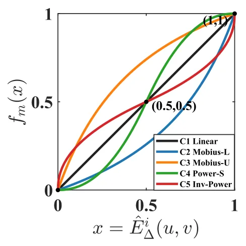
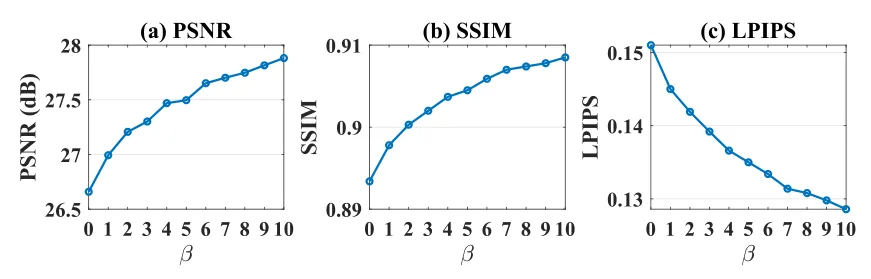
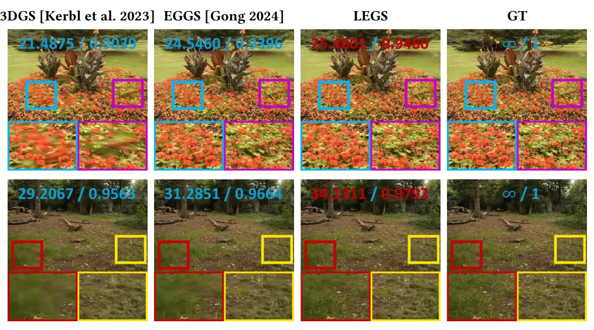
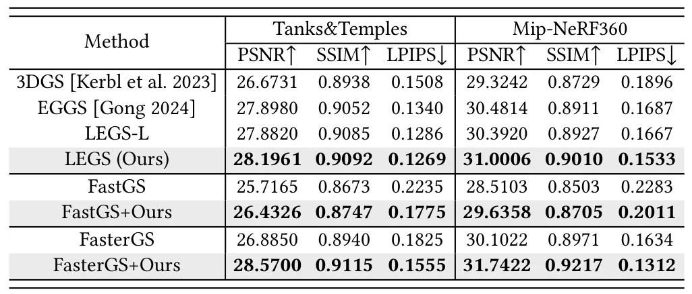
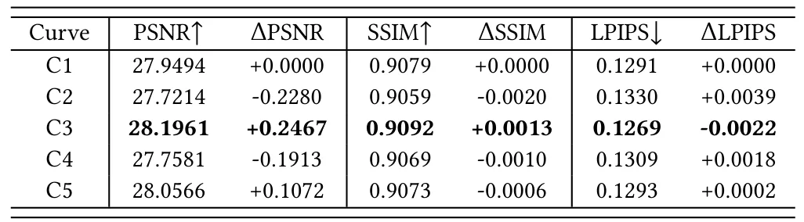

LEGS：基于拉普拉斯增强与非线性加权损失的高斯溅射LEGS: Laplacian-Enhanced Gaussian Splatting with a Nonlinear Weighted Loss
与 3DGS 地图质量提升高度相关，方法低侵入、可插拔，且在多个数据集与 FastGS/FasterGS 变体上给出明确 PSNR 增益。
一句话工作总结
LEGS 用二阶 Laplacian 和非线性像素权重增强 3DGS loss，在不改渲染管线的情况下提升边缘与细节重建。
摘要
3D Gaussian Splatting（3DGS）已经成为高效显式辐射场重建与实时新视角合成表示，但标准 photometric loss 对平坦区域和结构丰富区域采用相同处理，可能限制锐利轮廓和细节恢复。Edge-Guided Gaussian Splatting（EGGS）通过边缘引导权重提升结构感知，但主要依赖一阶梯度响应与线性加权。LEGS 提出以二阶 Laplacian 结构响应替代一阶梯度引导，并把归一化 Laplacian 响应通过非线性 response-to-weight 函数映射为像素级权重。该方法保持原始 3DGS 渲染管线不变，仅在损失层面增强结构感知优化。论文在 Tanks&Temples 与 Mip-NeRF360 上报告最高相对 3DGS 提升 1.68 dB PSNR、相对 EGGS 提升 0.52 dB；加入 FastGS/FasterGS 后仍可最高提升 1.69 dB。
3D Gaussian Splatting (3DGS) has become an efficient explicit representation for radiance field reconstruction and real-time novel view synthesis. However, its standard photometric loss treats flat and structure-rich regions similarly, which may limit the recovery of sharp contours and fine details. Edge-Guided Gaussian Splatting (EGGS) improves structure awareness through edge-guided weighting, but mainly relies on first-order gradient responses and linear weighting. In this paper, we propose LEGS, a Laplacian-Enhanced Gaussian Splatting method with a nonlinearly weighted loss. LEGS replaces first-order gradient guidance with second-order Laplacian structural guidance and maps the normalized Laplacian response into pixel-wise weights through nonlinear response-to-weight functions. The proposed loss improves structure-aware Gaussian optimization while keeping the original 3DGS rendering pipeline unchanged. Experiments on the full Tanks\&Temples and Mip-NeRF360 datasets show that LEGS improves peak signal-to-noise ratio (PSNR) by up to 1.68 dB over 3DGS and up to 0.52 dB over EGGS. Incorporating the proposed second-order nonlinear weighting strategy into FastGS and FasterGS further improves PSNR by up to 1.69 dB, demonstrating its effectiveness as a general loss-level extension for Gaussian Splatting pipelines with potential applications in AR/VR, immersive visualization, and real-time 3D content generation.
中文解读摘录
- 作者：Yongfei Guo, Qizhou Huo, Xuan Sun, Yuanhao Gong；类别：cs.CV / cs.GR / cs.MM / eess.IV / math.OC；发布日期：2026-06-06；采集 score=17
- 核心问题：标准 3DGS photometric loss 对平坦区和结构丰富区一视同仁，容易牺牲边缘、轮廓和细节；EGGS 虽引入 edge-guided weighting，但主要依赖一阶梯度和线性权重。
- 方法亮点：LEGS 用二阶 Laplacian 结构响应替代一阶梯度响应，并通过非线性 response-to-weight 函数生成 pixel-wise loss 权重；渲染管线不变，属于可插拔的 loss-level 扩展。
- 结果信号：在完整 Tanks&Temples 与 Mip-NeRF360 上，论文称相对 3DGS 最高提升 1.68 dB PSNR，相对 EGGS 最高提升 0.52 dB；迁移到 FastGS/FasterGS 后最高仍可提升 1.69 dB。
- 关注价值：如果代码可复现，它是低侵入式提升 3DGS 地图边缘清晰度和细节保真的方法，适合与 SLAM/重建后的 Gaussian 地图优化阶段结合。
图表/页面预览

{kind=link}

{kind=link}

{kind=link}

{kind=link}

{kind=link}
